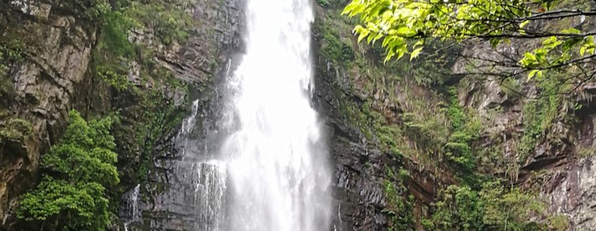
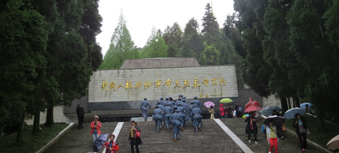

在没有到江西读书之前，江西最出名的莫过于婺源和庐山。
婺源，三四月份，漫山遍野的油菜花，但并没有惊艳到我，并没有再想去一次的冲动。
很久之前一直想去尝试徒步，我想用双脚下去丈量大地上的每一寸土地。
喜欢徒步的人不一定爱上的都是风景，有时徒步是一种感情的释放和发泄。其实，爱上的不单是徒步，更是背起背包，将心事一点点丢失在路途中的感觉，许多关于爱与恨、生活压力等片段在路上一点点的消散。
为什么有人要背着大包不远万里去徒步？是哗众取宠？追求逼格？还是徒步真的有所谓独特的情趣？我不知道，只是充满了敬畏，身与心必须在一起，只有和真正的户外人在一起，你才知道什么事生活，只有真正在户外走一回，大汗淋漓一次，你才知道未来怎样生活.
关于武功山；武功山地跨三市，分别市萍乡市芦溪县，吉安市安福县，宜春市袁州区，总面积达970平方千米，武功山主峰白鹤峰，也就是金顶，为江西第一高山。
关于徒步路线：
萍乡站到武功山大约还需要50公里，如果人数合适最好选择包车前往，价格大约是100到一百五之间一车，人少的话可以拼车，一个人大约三四十块钱，我们晚上到的萍乡站，拼车花了110元。火车站前有很多揽客的包车师傅，在这里提醒一下可以跟师傅讲价，但是一定要跟师傅说好把你送到哪个客栈，我们走的是龙山村的反穿路线，跟师傅一定要说到龙山村的二字头具体到哪一个客栈下车，因为龙山村到登山口也就是二字头还要五公里的距离，听说有人因为讲价，师傅把他送到龙山村就不管了，还要走5公里的山路，才能到登山口。
关于装备：
像现在这种季节，山上的紫外线特别强，一定要把自己裹的像个粽子，露出来眼睛能看路就可以了。
装备清单如下：一双舒服的登山鞋尤其重要，在路上看到有的驴友因为鞋子不合适最后穿拖鞋爬山；帽子最好戴能遮住前后的全譫的；专业登山杖两根，我们在山下买的竹子棍的只要两块钱但是远远不如登山杖的用舒服，各种防晒衣；防晒袖；魔术头巾一定是必备物品；手套，既可以防晒又可以防止手受伤；别的药品之类的可以带一点以防万一，最重要的一定要多涂防晒霜，并不是穿了防晒衣，带了魔术头巾就可以不涂，一样要涂，山上的紫外线可是不长眼的。
根据神话史诗记载，明月山为嫦娥的故乡，是当年嫦娥奔月的地方，因此宜春有“月都”、“月城”等美称。
“明月处处有，宜春月最明”，古人曾在诗中这样写道。位于宜春市境内的明月山，便是这份浓厚的月亮文化的发源地之一。明月山，因山上“有石夜光如月”而得名，竹海、飞瀑、松涛、奇峰等一些列优美的景致，让这座名山“步步拾锦绣，一里不同天”。
明月山主要由太平山、玉京山、老山、仰山等十几座海拨千米以上的山峰组成、主峰太平山，海拨1735.6米，因整个山势呈半圆形，恰似半轮明月，故称明月山。
传说明月山下有个夏家村，村里有个姑娘名叫夏云，小名明月，美丽出众，聪明过人。南宋高宗时期被选入宫，后成为宋孝宗赵 （shèn）的正宫皇后，就是历史上的成恭夏皇后。相传云姑入宫前，有一天突然头部奇痒难忍，一夜之间青丝尽落，接着又是身上奇痒难忍，揭衣一看，满身疥疮！云姑身染怪疾，遍寻四乡八村乡土郎中，怪疾依然如故。
这天，云姑上山打柴，忽闻一股异香。顿时，浑身通泰舒畅。云姑便循着这股异香一路追踪而上，便来到了一水潭边。因云姑爬山，赶路，浑身出汗，痒热难忍，见这清澈见底的溪水，禁不住就产生了想洗澡的欲望。她抬头望望四周，只见奇花异草和参天古木形成了一道天然屏障，于是，她解开罗裙，褪去小衣，跃入潭中。顿时，感到有一股妙不可言的舒坦传遍全身。 云姑在潭中沐浴的时候，水潭的上空腾起无数条七色的彩虹，把水潭遮掩得严严实实。后来人们常说，这是上天为庇护皇娘沐浴而派天神特意施放的一道屏风。云姑尽情地沐浴了近两个时辰，乏了，便爬上那块平整的巨石，躺在上面休息，直至天色已晚才回家。此后，云姑便经常来这里沐浴。 说来也奇怪，自打云姑在那山泉溪水中沐浴之后，头上、身上的怪疾日见好转。有人说，是山泉中含矿物质之高，能消炎杀菌，云姑的皮肤病得以痊愈；有人说，云姑之所以患皮肤病，是因为她将为皇娘，须先得易皮换发，此乃天意。云姑病好后被选入宫中，不久即位居皇娘。从此，家乡的人们把成恭皇后曾沐浴过的那条小溪叫做七彩溪。不管什么季节，只要天晴，游人来到七彩溪的时候，一定能看到那色彩斑斓的七色彩虹。
到井冈山风景区后，首先想要看到的是龙潭景区的瀑布。
水调歌头·重上井冈山 久有凌云志，重上井冈山 。千里来寻故地，旧貌变新颜。到处莺歌燕舞，更有潺潺流水，高路入云端。过了黄洋界，险处不须看。 风雷动，旌旗奋，是人寰。 有“郴衡湘赣之交，千里罗霄之腹”之称的井冈山不仅是革命圣地更是山清水秀人杰地灵之地。 
井冈山，位于江西省吉安市井冈山市，是中国革命根据地、国家5A级旅游景区、国家级自然保护区、全国红色旅游景区、世界生物圈保护区，毛泽东、朱德会师(井冈山会师）就是在这里 。 该景区地处湘东赣西边界，南岭北支、罗霄山脉中段。距吉安市吉州区约130公里，距井冈山市新城区（红军大道）35公里。是集人文景观、自然风光和高山田园为一体的山岳型风景旅游区。 2015年7月，德国波恩召开的第39届世界遗产大会上，联合国教科文组织将井冈山-北武夷山（武夷山拓展项目）正式列入世界遗产预备名录。
1927年10月，毛泽东、朱德、陈毅、彭德怀、滕代远等老一辈无产阶级革命家率领中国工农红军来到井冈山，创建以宁冈县为中心中国第一个农村革命根据地，开辟了“以农村包围城市、武装夺取政权”的具有中国特色的革命道路，从此鲜为人知的井冈山被载入中国革命历史的光荣史册，被誉为“中国革命的摇篮”和“中华人民共和国的奠基石”。井冈山的斗争，从1927年10月到1930年2月为止，共计两年零四个月，时间虽不长，但为中国开辟了一条成功之路，尤其为后人留下宝贵的精神财富——井冈山精神；坚定信念，敢闯新路。其精髓是：一是坚定不移的理想信念；二是实事求是的思想路线；三是党管武装的基本原则；四是血肉相连的干群关系；五是艰苦奋斗的创业精神。迄今保存完好的井冈山斗争革命旧址遗迹达100多处，其中21处被列为中国重点文物保护单位。6处被列为省级重点文物保护单位，35处被列为市级文明保护单位。
新余仙女湖风景区位于江西省新余市西南郊16公里处，新余仙女湖是古籍《搜神记》中记述的“仙女下凡”传说的发祥地，新余仙女湖风景区岛屿星罗棋布，是闻名遐迩的湖泊型国家重点风景名胜区。
在万顷碧涛的仙女湖，既可观赏水天相接、渔帆点点的汪洋平湖；又可领略山水缠绵相依、湖叉曲径通幽的迷幻世界；还可轻舟漫游在蜿蜒曲折、船动景移的水峡。在新余仙女湖风景区的碧波之下，蕴藏着一个神奇的世界，水下古城、水中古桥、水底堰、水下古石刻、堪称华厦一绝。 据考古学家考证，在新石器时代之前，人类就在新余仙女湖地区繁衍生息。
千百年来，先人们的智慧，先人们的劳作，为这方水土留下了深厚凝重的古文化积淀和人文胜迹。新石器时代古人类栖息，东晋道学家葛洪、娄阳修道炼丹的洪阳洞，东汉古陶窑遗址，建于唐朝的昌山圣母庙，江西第一个状元卢肇的读书台，建于宋朝的北山寺，龙王庙，明朝权相严嵩故里等，无不精彩纷呈。尤其是《天工开物》为新余仙女湖灵山秀水平添了丰富的文化内涵。 几年来，新余仙女湖已经开发了会仙岛、白鹭岛、猴岛、傣族岛、蒙古族岛、湖心岛、花岛、若虹群岛、万年桥、昌北庙、龙王庙、洪阳洞、白鹭山庄、花园山庄、湖鲜舫、水上飞机、水上摩托车、水上皮划艇、水上滑板等观光景点、服务设施和娱乐项目，新余仙女湖是人们游山玩水、休闲度假的旅游圣地。
购物&特产:
仙女湖仙竹（润）笋干：本品以仙女湖风景区深山毛竹春笋为原料，经传统工艺加工而成，清香可口，原汁原味，是难得的绿色天然食品。清蒸水煮小炒均可，具有清热解毒、减肥健身、延年益寿等功效
仙女湖名茶：本品先用仙女湖一带优质嫩芽为原料，采用传统工艺揉制而成，具有条索纤细、卷曲成螺、白毫显露、香气浓郁、滋味鲜醇甘厚、汤色碧绿、清澈等特点，历来被饮者视为茶中佳品。本品具有消暑解渴、清热解毒、醒神益思、保肝明目、除臭防龃、减肥健身等功效。
仙女湖纯天然干白鱼、干鱼块：白鱼，又名翘嘴巴，是一种喜欢捕食水中动物的鱼类，是新余仙女湖优质天然野生鱼。它肉质白嫩，口感清爽。经过传统腌制和科学配方烘干而成，色、香、味俱佳，是居家、旅游、宴席、馈赠的理想佳品。
仙女湖蜂蜜、花粉、蜂王浆：是纯天然营养、食疗、美容、保健佳品。天然的蜂产品具有促进代谢健体、调节内分泌、美容、养心益肾生精、滋阴补虚生血、补脑益智健胃、补中益气安神、养颜益寿延年、防疾祛病抗癌等功效。